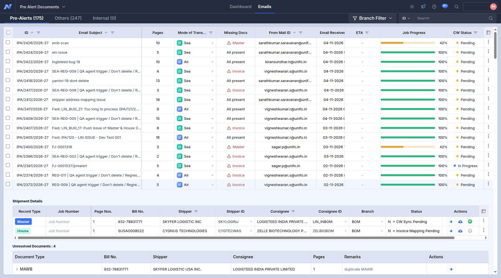
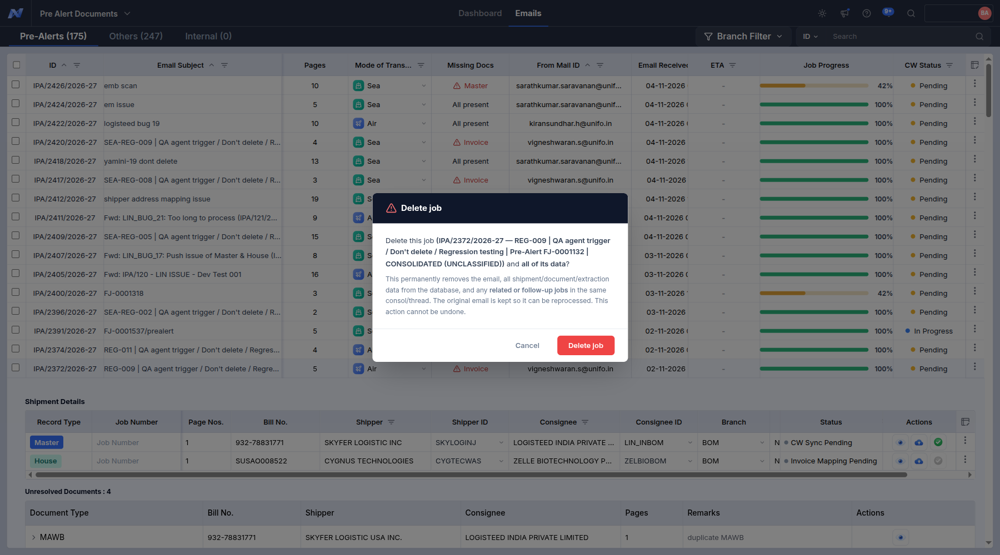

Trace of cleanup - no-ipa (2 screenshots, in the order they were taken)
01. 165135 Pre-Alerts IPA-2372-2026-27 before delete
01_165135_Pre-Alerts_IPA-2372-2026-27_before_delete.png

02. 165137 IPA-2372-2026-27 confirm dialog
02_165137_IPA-2372-2026-27_confirm_dialog.png
